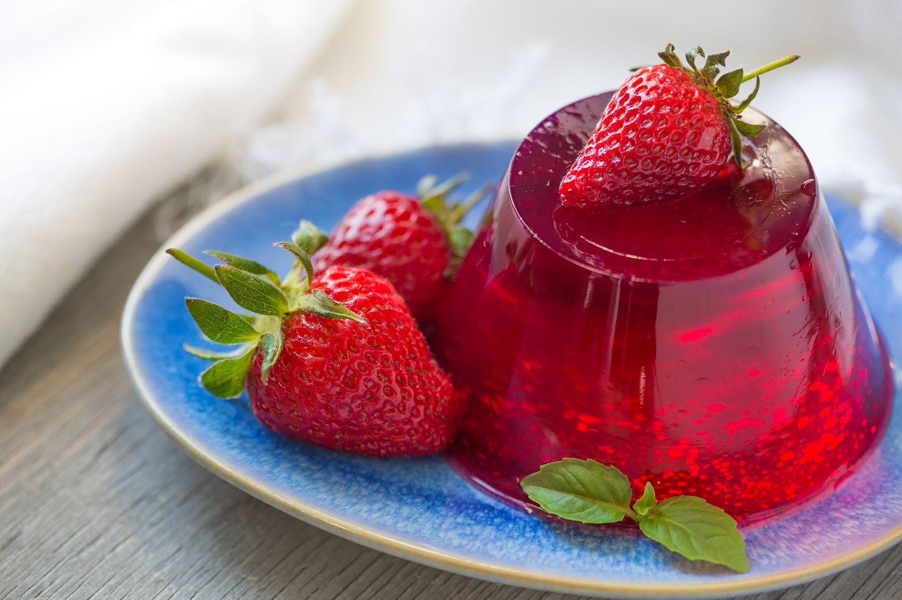

| ingredientes | cantidad |
|---|---|
| arroz | 500gr |
| leche | 1 L |
| Canela | 10gr |
paso 1: hervir la leche a fuego bajo.
paso 2: agregar el arroz a la leche y mover durante 5min.
paso 3: agregar la canela y mover hasta quedar al gusto.

| ingredientes | cantidad |
|---|---|
| sobre de gelatina | 1 sobre |
| agua | 1 L |
paso 1: hervir el litro de agua.
paso 2: agregar el sobre al agua hervida y dejar reposar a temperatura ambuente durante 1 hora .
paso 3: reposar en refrigerador .
| ingredientes | cantidad |
|---|---|
| bollido o pan de su preferencia. | 1 pieza |
| quesillo | 20gr |
| carne de pollo empanizad a | 20gr |
| lechuga y tomate | (cantidad que guste) |
paso 1: Partir el pan por la mitad.
paso 2: Agregar los ingredientes al gusto .
receta: libro de recetas de la abuela